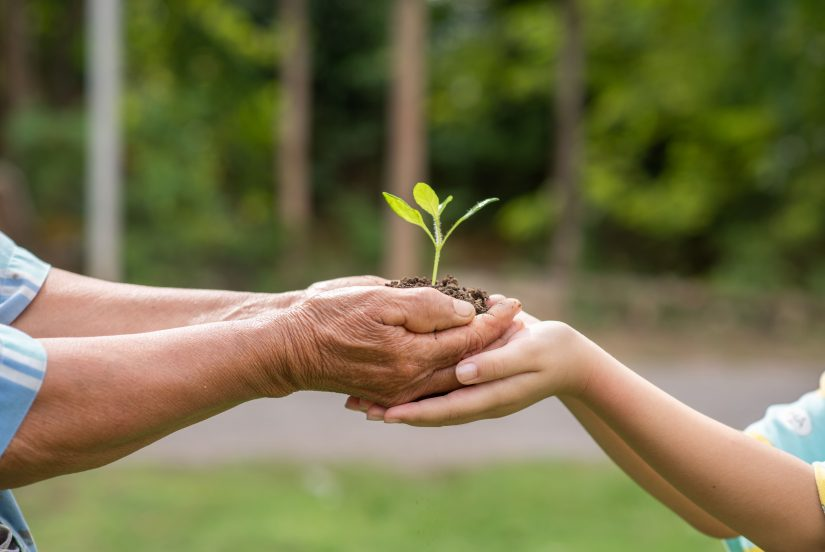
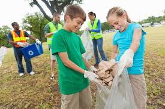

Peduli Lingkungan adalah kesadaran untuk bersikap dan bertindak nyata terhadap pencegahan kerusakan lingkungan serta memperbaikinya. Bertujuan untuk menjaga kelestarian alam dan menciptakan lingkungan yang bersih sehat, dan nyaman bagi semua. Kerusakan lingkungan sekarang sudah sangat berdampak bagi lingkungan. Mulai dari pencemaran, bencana, eksploitasi, dan lain-lainnya. Walaupun terkadang tidak terasa, pelan-pelan semua masalah ini merusak bumi dan berdampak bagi kita semua. Sikap peduli lindungi penting untuk diterapkan agar dapat menjaga kelestarian dan kenyamanan bukan hanya bagi kita tetapi bagi semua makhluk hidup.

